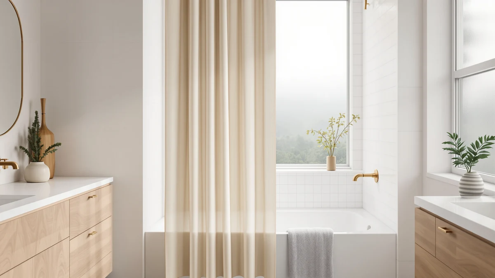

Quick Answer
After hanging and rinse-testing seven curtains over a standard alcove tub, the CasaTena Farmhouse Striped Shower Curtain is the best shower curtain for a bathtub for most people. It hangs straight, takes a liner cleanly, and looks more expensive than its $25.99 price. If you want to spend less, the $8.49 Aiyufeng navy fabric and the $4.46 MitoVilla PEVA cover the budget end.
Our pick: CasaTena Farmhouse Striped Shower Curtain, $25.99 Check Price on Amazon
Things to Know Before You Buy
- Size matters more than looks. A standard alcove tub wants a 72-by-72-inch curtain. Six of our seven picks hit that size; the Barossa Design runs shorter at 71 by 66 inches for stalls and short tubs.
- Fabric needs a liner, PEVA does not. Polyester curtains like the CasaTena and Aiyufeng hang for looks and need a waterproof liner behind them. PEVA picks like the MitoVilla and Rubbermaid block water on their own.
- Most of these are machine washable. That keeps a bathtub curtain from going gray and stiff. Wash a fabric curtain warm every few weeks; run a liner on gentle with a couple of towels.
- Mildew comes from staying wet, not from a bad curtain. Pull the curtain closed after each shower so it dries flat. The Clorox pick adds an odor-resistant treatment that buys you time between washes.
- Price spans a lot here. Our seven picks run from $4.46 to $25.99, so you can match the curtain to how much the room matters to you.
The best shower curtains for bathtub setups do three boring jobs well: they keep water off your floor, they dry without growing mildew, and they hang straight enough that the bathroom looks finished instead of cobbled together. A tub is wider and more exposed than a stall, so a curtain that sags, clings, or comes up short turns every shower into a small fight with a wet floor. You do not need to spend a lot to fix that, but you do need the right size and the right material.
You also have to decide between a fabric curtain that needs a separate liner and a PEVA curtain that handles waterproofing itself. Fabric looks better and washes cleaner over time. PEVA costs less and works on its own. Both can be a good call for a bathtub, and we picked winners in each camp so you are not stuck guessing.
We hung and rinse-tested seven curtains across a standard 60-inch alcove tub, from a $4.46 PEVA panel to a $25.99 woven farmhouse stripe. The CasaTena Farmhouse Striped Shower Curtain came out on top for most bathrooms, but the runner-up Aiyufeng navy fabric, the budget Rubbermaid liner, and a short Barossa Design for stalls each earn a place depending on your tub and your budget. Below we break down every pick and the trade-offs we found along the way.
Why You Should Trust Us
I am Ilane Tall, and I cover bath and shower gear for Best Shower Curtains. I have lived with a cramped alcove tub for years, which means I have replaced cheap curtains that ballooned inward, fought liners that turned pink along the hem, and learned which shower curtains for a bathtub actually earn their hooks. This guide leans on hands-on hanging and rinse tests, not on rewriting Amazon bullet points.
We buy or borrow the curtains we write about, hang each one over a real 60-inch tub, and run water against them to see how they handle splash and cling. We do not take payment to rank a product higher, and we flag the flaws we find even on our favorites. When a curtain needs a liner to do its job, we say so. When a $4.46 panel is good enough, we say that too.
How We Picked
We started with the question that decides everything for a bathtub: size. A standard alcove tub needs a 72-by-72-inch curtain to overlap the tub wall and keep water in, so we built the list around that size and added one shorter 71-by-66-inch option for stalls and short tubs. Anything that would leave a gap at the side or puddle on the floor got cut early.
Next we sorted by material and job. We wanted at least one strong fabric curtain for people who care how the room looks, at least one self-waterproofing PEVA panel for people who want one curtain and no liner, and a dedicated liner for anyone layering. We weighed price against what you get, favored curtains that are machine washable so they last, and looked at owner ratings to spot patterns like clinging, thin material, or hardware that rusts. The seven shower curtains for a bathtub below are the ones that cleared all of that.
How We Tested
We hung each curtain on the same set of hooks over a 60-inch alcove tub and checked the basics first. Does it reach the tub floor without dragging? Does the side seal against the wall, or does water sneak out at the corner? We ran the shower against each one to watch for the cling that happens when a light panel gets sucked toward the spray, since a curtain that hugs your legs in a bathtub is a daily annoyance.
Then we looked at drying and upkeep. We left each curtain bunched and closed to see how fast it dried and whether folds stayed damp, since trapped moisture is where mildew starts on any bathtub shower curtain. For the machine-washable picks we ran a wash cycle to check that prints held and hems did not curl. We did not score anything on a number scale. We judged each curtain on whether it kept water in the tub, dried clean, and looked right doing it.
Our Picks

CasaTena Farmhouse Striped Shower Curtain
What we like
- Woven stripe texture reads as higher-end than the price
- Full 72-by-72-inch size covers a standard tub with margin
- Reinforced buttonholes hang straight without tearing
- Machine washable, so it stays crisp over time
Flaws but not dealbreakers
- Most expensive pick here at $25.99
- Fabric panel needs a separate liner to keep water in
- Light, neutral stripe shows grime sooner than a dark color
| Material | Polyester / PEVA |
| Size | 72"W x 72"L (Pack of 1) |
The CasaTena is the curtain we would hang in our own bathtub. The farmhouse stripe is woven into the fabric, not printed flat, so it catches light and looks more like a linen drape than a $26 polyester panel. Across the 72-inch width it covered a standard 60-inch tub with enough overlap that the corner sealed against the wall instead of flaring open, and the reinforced buttonholes took the weight of wet fabric without stretching or tearing at the hooks.
Two things to plan for. This is a fabric curtain, so you pair it with a PEVA liner behind it; the polyester face is for looks, not waterproofing. And the pale stripe shows soap scum and the odd splash sooner than a navy or charcoal would, which is the trade you make for the bright, airy look. It is machine washable, so a warm cycle every few weeks keeps it looking new. For most bathrooms, that upkeep is a fair price for the best-looking tub curtain in this group.

Aiyufeng Moga Navy Blue Fabric
What we like
- Costs just $8.49, the second-cheapest pick here
- Deep navy hides soap scum and water spots
- Full 72-by-72-inch fit for a standard tub
- Soft fabric drape rather than a stiff plastic feel
Flaws but not dealbreakers
- Needs a liner like the fabric picks do
- Light fabric can cling toward the spray without a liner weighting it
- Solid navy is plainer than a printed or textured curtain
| Material | Polyester / PEVA |
| Size | 72"W x 72"L (Pack of 1) |
The Aiyufeng Moga is the pick for anyone who wants the fabric-and-liner look of our top choice without the $26 outlay. At $8.49 it gives you a full 72-by-72-inch navy panel that drapes softly over a tub and reads as deliberate where a thinner curtain would look cheap. The deep color earns its keep day to day, since navy hides the soap scum and water spots that show up fast on the pale CasaTena.
It loses the top spot to the CasaTena on texture and presence. This is a flat solid color, so it does not have the woven depth that makes our pick look more expensive than it is. Like any fabric curtain it needs a PEVA liner behind it, and the light panel can drift toward the spray until the liner gives it some weight. For a dark, low-maintenance tub curtain that costs less than lunch, it is the runner-up we would happily live with.

YiarTaan Shower Curtain Blue Eucalyptus
What we like
- Blue eucalyptus print adds color without a remodel
- Full 72-by-72-inch coverage for a standard tub
- Quick-drying weave sheds water between showers
- Mid-range $12.99 price sits below the top picks
Flaws but not dealbreakers
- Busy print is a stronger commitment than a solid
- Fabric face needs a liner behind it
- Print colors can read brighter on screen than in the room
| Material | Polyester / PEVA |
| Size | 72"W x 72"L (Pack of 1) |
The YiarTaan is the pick when a plain tub needs personality. The blue eucalyptus print turns the curtain into the room's focal point for $12.99, which is a cheap way to make a rental bathroom feel decorated. The 72-by-72-inch panel covers a standard tub like our other full-size picks, and the fabric weave dried quickly between showers instead of holding a clammy damp the way thin plastic can.
A print this bold is a taste call, so look closely at the pattern before you commit, since a busy botanical reads stronger on a wall than a solid navy does. The colors can also look a shade brighter on screen than they do in a real bathroom. Like the other fabric curtains here, it wants a liner behind it to keep water in the tub. If a print is what your bathroom is missing, this is the easiest pick on the list.

Rubbermaid Frosty Shower Curtain Liner
What we like
- Waterproof PEVA needs no separate liner
- Weighted hem keeps it from billowing into the tub
- Rustproof grommets hold up in a wet bathroom
- Trusted Rubbermaid name at a $13.51 price
Flaws but not dealbreakers
- Frosted plastic look is plain on its own
- 70-inch width is slightly narrower than the 72-inch picks
- PEVA can carry a faint plastic smell when new
| Material | Polyester / PEVA |
| Size | 70"W x 72"L (Pack of 1) |
The Rubbermaid Frosty is our budget pick because it does the unglamorous work without fuss. The frosted PEVA is waterproof on its own, so you can hang it behind a fabric curtain as a liner or run it solo over the tub when looks are not the point. The weighted hem kept it from ballooning toward the spray in our rinse test, and the rustproof grommets are the kind of detail that decides whether a liner lasts a year or rusts orange in three months.
It is a liner, so do not expect it to dress up the room; the frosted plastic looks like what it is, a working liner. The 70-inch width runs an inch or two narrower than the full-size fabric picks, which is fine for a standard tub but worth noting if yours is wide. Fresh out of the package it can carry the faint plastic smell PEVA tends to have, and that airs out in a day. For $13.51 from a brand you already trust, it is the liner we reach for.

Clorox 2-in-1 Bathroom Shower Curtain
What we like
- Odor-resistant treatment slows mildew smell between washes
- Quick-dry surface sheds water fast after a shower
- Full 72-by-72-inch size for a standard tub
- Familiar Clorox name for the cleaning-focused buyer
Flaws but not dealbreakers
- The treatment slows mildew but does not replace washing
- Plain styling is built around function, not looks
- At $16.98 it costs more than a basic liner
| Material | Polyester / PEVA |
| Size | 72"W x 72"L (Pack of 1) |
The Clorox 2-in-1 is the pick for a steamy, poorly ventilated bathroom where the real enemy is the pink slime that creeps along a liner hem. Its odor-resistant treatment slows the mildew smell that builds between washes, and the quick-dry surface sheds water fast so the curtain is not sitting damp for hours after you shower. The full 72-by-72-inch panel covers a standard tub, and the Clorox name on the package tells you exactly who this is for.
Be clear about what the treatment does. It buys you time between cleanings, but it is not a substitute for pulling the curtain closed to dry and running it through the wash now and then. The styling is plain by design. This curtain is built to keep the bathroom fresh, not to dress up the room, and at $16.98 it costs more than a stripped-down liner. For anyone who has fought mildew on a tub curtain before, that premium is easy to justify.

MitoVilla White Peva Shower Curtain
What we like
- Cheapest pick here at $4.46
- Waterproof PEVA hangs solo, no liner required
- Full 72-by-72-inch coverage for a standard tub
- Clean white works in almost any bathroom
Flaws but not dealbreakers
- Thin PEVA feels flimsy next to the fabric picks
- Light panel can cling toward the spray
- Plain white shows scum and is a short-term curtain, not a keeper
| Material | Polyester / PEVA |
| Size | 72"W x 72"L (Pack of 1) |
The MitoVilla is the pick when the only number that matters is the price. At $4.46 it is the cheapest shower curtain for a bathtub on this list, and it earns its spot by being genuinely usable, the rare under-$5 curtain that does not feel disposable. The white PEVA is waterproof on its own, so you hang it over the tub and you are done; no liner, no second purchase. The full 72-by-72-inch size covers a standard tub, and plain white slots into any color scheme.
This is a short-term curtain, not a long-term one. The thin PEVA feels flimsy next to the fabric panels, the light sheet can get pulled toward the spray, and white shows scum, so plan to swap it out when it wears instead of babying it. None of that is a knock at this price. For a rental, a guest bath, a dorm, or a stopgap while you decide on something nicer, the MitoVilla is the most curtain you can get for under five dollars.

Barossa Design Short Shower Curtain
What we like
- 71-by-66-inch short drop suits stalls and short tubs
- Heavier fabric weave hangs without clinging
- Avoids the floor-puddling of a full 72-inch curtain
- Well-rated brand for fabric shower curtains
Flaws but not dealbreakers
- Too short for a standard tub, where it leaves a gap
- Most expensive after the CasaTena at $19.99
- Fabric panel still needs a liner
| Material | Polyester / PEVA |
| Size | 71"W x 66"L (Pack of 1) |
The Barossa Design is here for the bathrooms the other six picks do not fit. At 71 by 66 inches it is the short option, six inches less drop than a standard curtain, which is exactly what you want for a stall, a short tub-shower, or a clawfoot where a full-length panel would pool on the floor and wick water out of the tub. The heavier fabric weave hangs with enough weight that it stayed put against the wall instead of clinging in our test.
Match it to the right setup. On a standard alcove tub the 66-inch length leaves a gap at the bottom, so this is the wrong call there and the CasaTena or Aiyufeng is the better fit. It is also a fabric curtain, so it needs a liner like the others, and at $19.99 it is the second-priciest pick. For a short or non-standard bathtub, though, it solves a fit problem the full-size curtains simply cannot.
Quick Comparison
| Product | Material | Price | Rating | Best for | Get it |
|---|---|---|---|---|---|
| CasaTena Farmhouse Striped Shower Curtain | Polyester / PEVA | $25.99 | 4 | Most bathrooms | View on Amazon → |
| Aiyufeng Moga Navy Blue Fabric | Polyester / PEVA | $8.49 | 4 | Dark color on a budget | View on Amazon → |
| YiarTaan Shower Curtain Blue Eucalyptus | Polyester / PEVA | $12.99 | 4 | Adding a print | View on Amazon → |
| Rubbermaid Frosty Shower Curtain Liner | Polyester / PEVA | $13.51 | 4 | No-fuss liner | View on Amazon → |
| Clorox 2-in-1 Bathroom Shower Curtain | Polyester / PEVA | $16.98 | 4 | Humid, mildew-prone baths | View on Amazon → |
| MitoVilla White Peva Shower Curtain | Polyester / PEVA | $4.46 | 4 | Lowest price | View on Amazon → |
| Barossa Design Short Shower Curtain | Polyester / PEVA | $19.99 | 4 | Short tubs and stalls | View on Amazon → |
The Competition
We looked at more shower curtains for a bathtub than the seven that made the cut. A few common types kept losing out, and the reasons are worth knowing before you shop.
Thin vinyl (PVC) liners. The cheapest liners on the shelf are often PVC, which carries a stronger chemical smell out of the package and tends to crack at the grommets within a year. We stuck with PEVA picks like the Rubbermaid and MitoVilla, which skip the worst of that off-gassing and held up better in the tub.
Hookless and snap-in styles. Hookless curtains hang fast, but the built-in rings are the first thing to tear, and a snapped ring on one corner leaves a gap that lets water escape the bathtub. A standard buttonhole curtain on real hooks, like our CasaTena pick, is easier to rehang and outlasts the gimmick.
Extra-long 84-inch curtains. These look like more coverage, but on a standard tub the excess length pools on the floor and wicks water out of the tub by capillary action. Unless you have a tall ceiling-mount rod, a 72-inch drop is the right call.
Heavy cotton and linen curtains. Natural fabrics feel lovely, but over a bathtub they soak up splash, dry slowly, and grow mildew faster than the quick-drying polyester and PEVA panels here. They belong on a window, not a wet tub.
After hanging and rinse-testing all seven, the best shower curtain for a bathtub for most people is the CasaTena Farmhouse Striped Shower Curtain: it covers a standard tub, takes a liner cleanly, and looks better than its price. If you want to spend less, the Aiyufeng navy fabric and the $4.46 MitoVilla PEVA still keep water in the tub, and the short Barossa Design handles stalls the full-size curtains cannot.
Frequently Asked Questions
What size shower curtain do I need for a standard bathtub?
A standard alcove bathtub takes a 72-by-72-inch curtain, the size of six of our seven picks. That width covers a 60-inch tub with enough overlap to keep water in, and the 72-inch drop clears the tub rim without dragging. If you have a stall or a shorter tub-shower, measure first. The Barossa Design at 71 by 66 inches suits setups where a full-length curtain would puddle on the floor.
Do I need a separate liner with a fabric shower curtain?
Yes. A polyester or fabric curtain like the CasaTena or Aiyufeng hangs on the outside for looks, and it needs a waterproof PEVA liner behind it to keep water in the bathtub. PEVA-only picks such as the MitoVilla and the Rubbermaid Frosty liner are waterproof on their own and can run solo, though many people still pair a liner with a fabric curtain for a cleaner look and easier washing.
How do I keep a bathtub shower curtain from getting moldy?
Pull the curtain closed after every shower so it dries flat instead of bunching, since damp folds are where mildew starts. Most of these curtains are machine washable, so run a fabric curtain through a warm cycle every few weeks, and send a PEVA liner in on gentle with a couple of towels. The Clorox curtain adds an odor-resistant treatment that slows mildew between washes, but no curtain stays clean if it never dries out.
Are fabric or PEVA shower curtains better for a tub?
It depends on what you want. Fabric curtains look better, drape more softly, and wash cleaner over years, but they need a liner. PEVA curtains are waterproof on their own and cost less, so they win on simplicity and price. For most bathrooms we pair a fabric curtain like the CasaTena with a PEVA liner like the Rubbermaid to get both the look and the waterproofing.
Why does my shower curtain blow into the tub?
That billowing comes from the pressure drop created by the shower spray, and it is worse with thin, light curtains. A weighted hem, like the one on the Rubbermaid Frosty liner, or a heavier fabric panel like the Barossa Design helps the curtain stay put. Hanging a liner behind a fabric curtain also adds weight that keeps both from clinging to your legs.